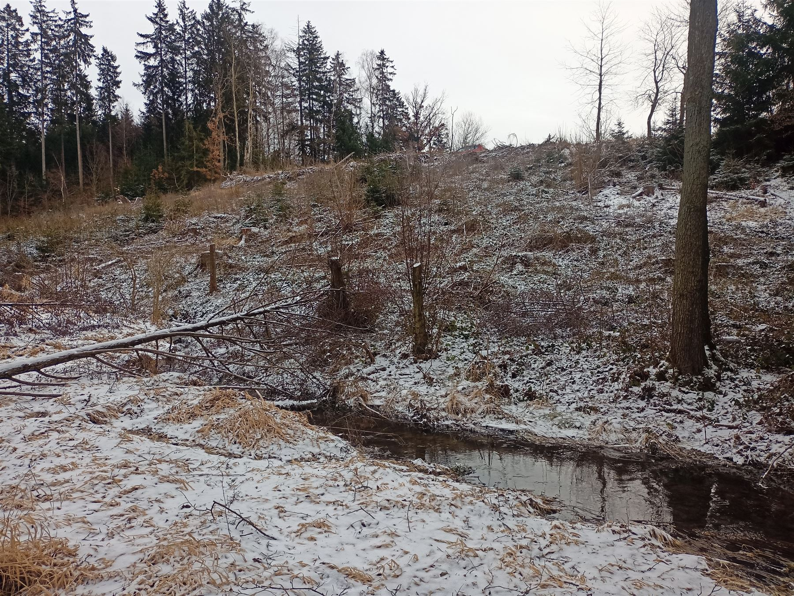

Long-term treesStromy na generace
Slow-growing giants for the next generations – walnuts, sweet chestnuts and other nut trees.Pomalu rostoucí velikáni pro další generace – ořešáky, jedlé kaštany a další ořechy.
Revitalizace + LesRevitalizace + Les
We turn forests killed by bark beetle, and fields and meadows worn out by chemicals and heavy machinery, into a living, edible landscape – fruit and nut trees, berries, medicinal herbs, ponds, wetlands and wild places. Z lesů zničených kůrovcem a z polí a luk vyčerpaných chemií a udusaných těžkou technikou děláme živou, jedlou krajinu – ovocné a ořechové stromy, keře, léčivky, tůně, mokřady a divoká místa.
A philanthropic project – everyone is welcome to join.Filantropický projekt – přidat se může každý.
Our missionNaše mise Join usPřidejte seVisionVize
We see dead monoculture forests and exhausted fields and meadows turning into living, edible landscapes that hold water, rebuild soil, shelter wildlife and feed local people – and places where anyone can see that independent, sustainable living really works. Vidíme, jak se mrtvé monokulturní lesy i vyčerpaná pole a louky mění v živou, jedlou krajinu, která drží vodu, obnovuje půdu, chrání divokou přírodu a živí místní lidi – a v místa, kde se každý může přesvědčit, že nezávislý a udržitelný život opravdu funguje.
MissionMise
We restore damaged land with care and patience, keep old varieties alive, share what we grow and what we learn, and openly test solutions for life without fossil fuels. S péčí a trpělivostí obnovujeme poškozenou půdu, udržujeme staré odrůdy, sdílíme to, co vypěstujeme i co se naučíme, a otevřeně testujeme řešení pro život bez fosilních paliv.
Revitales is a philanthropic project. Restoring the land comes first – everything else follows.Revitales je filantropický projekt. Na prvním místě je obnova půdy – vše ostatní přichází samo.
Profit is not the goal – it is a secondary, logical result. When damaged land is healed, the outcome is a perfect place to live, surrounded by fruit, nuts and berries growing naturally, with clean water and rich soil. Such a place has real value on its own: harvests, surplus, knowledge and a good life. That value is shared with everyone who helps create it.Zisk není cílem – je druhotným, logickým výsledkem. Když se zničená půda uzdraví, vznikne dokonalé místo pro život obklopené přirozeně rostoucími plody, s čistou vodou a živou půdou. Takové místo má hodnotu samo o sobě: úrodu, přebytky, znalosti a dobrý život. O tuto hodnotu se dělíme se všemi, kdo pomáhají ji vytvořit.
No membership, no fees, no experience needed. If you care about nature, you belong here.Žádné členství, žádné poplatky, žádné zkušenosti nejsou potřeba. Pokud vám záleží na přírodě, patříte sem.
We plant trees whose shade we may never sit in. The real return is a healthier landscape for those who come after us.Sázíme stromy, v jejichž stínu možná nikdy sedět nebudeme. Skutečným výnosem je zdravější krajina pro ty, kdo přijdou po nás.
The name Revitales joins two Czech words: revitalizace (revitalisation) and les (forest). Název Revitales spojuje dvě slova: revitalizace a les.
It all began in the forest. Like much of Central Europe, the land was planted as a spruce monoculture. The huge bark beetle outbreak of recent years killed it, leaving clearcuts with very acidic, tired soil. Our first idea was simple: buy these clearcuts and, instead of replanting the same thing, build an edible forest orchard. Všechno začalo v lese. Jako velká část střední Evropy byla i tahle půda osázená smrkovou monokulturou. Kůrovcová kalamita ji zničila a zůstaly holiny s velmi kyselou, vyčerpanou půdou. První myšlenka byla jednoduchá: tyto holiny odkoupit a místo toho, abychom vysadili totéž znovu, založit jedlý lesní sad.
Very quickly we saw that the forest is not the only wounded land. Fields and meadows around us are just as exhausted – poisoned by years of chemicals, compacted by heavy machinery, drained so that water runs straight off. Soil like that cannot breathe, hold water or support life. Velmi rychle jsme ale viděli, že les není jediná zraněná půda. Pole a louky kolem nás jsou stejně vyčerpané – roky ničené chemií, udusané těžkými stroji, odvodněné tak, že voda hned odteče. Taková půda nedýchá, nedrží vodu a neunese život.
So the mission grew: whether it is a dead spruce stand, a worn-out field or a compacted meadow, we give it the same answer – an edible orchard with wetlands, a diverse and resilient system that feeds people, wildlife and the soil itself. Mise se proto rozrostla: ať jde o mrtvou smrčinu, vyžilé pole nebo udusanou louku, dáváme jim stejnou odpověď – jedlý sad s mokřady, pestrý a odolný systém, který živí lidi, zvířata i samotnou půdu.

Problem:Problém: dead monoculture, very acidic soil, no shade, drying out.mrtvá monokultura, velmi kyselá půda, žádný stín, vysychání.
What we do:Co děláme: raise the pH with compost and mulch, plant nut and fruit trees in layers, dig ponds in the hollows.zvedáme pH kompostem a mulčem, sázíme ořešáky a ovocné stromy v patrech, v terénních sníženinách hloubíme tůně.
Problem:Problém: soil poisoned by chemicals, compacted by heavy machines, drained – water runs off, life disappears.půda zničená chemií, udusaná těžkými stroji, odvodněná – voda odtéká, život mizí.
What we do:Co děláme: loosen the soil with deep-rooting plants, bring back microbes with compost, restore wetlands, plant orchards and hedgerows.kypříme půdu hluboko kořenícími rostlinami, kompostem vracíme mikroby, obnovujeme mokřady, sázíme sady a remízky.
➜ The result in both cases: an edible orchard with wetlands – food, water, shade and a home for wildlife. ➜ Výsledek v obou případech: jedlý sad s mokřady – jídlo, voda, stín a domov pro divokou přírodu.
We care for about five hectares spread over seven locations. Each one gets its own focus, so together they form a varied, living collection. The main themes are: Staráme se zhruba o pět hektarů na sedmi místech. Každé dostane vlastní zaměření, takže dohromady vznikne pestrá živá sbírka. Hlavní témata jsou:
Slow-growing giants for the next generations – walnuts, sweet chestnuts and other nut trees.Pomalu rostoucí velikáni pro další generace – ořešáky, jedlé kaštany a další ořechy.
Fruit trees combined with berry bushes in layers, giving harvests within a few years.Ovocné stromy v patrech s bobulovinami – úroda už během několika let.
Former fields and compacted meadows brought back to life with ponds, wetlands and orchards that hold water and shelter amphibians.Bývalá pole a udusané louky oživené tůněmi, mokřady a sady, které drží vodu a dávají útočiště obojživelníkům.
Medicinal herbs plus “no-go” areas left fully to nature.Léčivé byliny a „zakázané“ zóny ponechané úplně přírodě.
The themes above are a guide – the final layout of each site will follow its soil, water and slope.Témata jsou orientační – konečné uspořádání každého místa se řídí půdou, vodou a svahem.
Digging ponds and restoring wetlands to keep water in the landscape and create cooler, moister microclimates.Hloubíme tůně a obnovujeme mokřady, aby voda zůstala v krajině a vzniklo vlhčí a chladnější mikroklima.
Supporting local food self-sufficiency with fruit, nuts, berries and herbs.Podporujeme místní soběstačnost v jídle – ovoce, ořechy, bobule, byliny.
Healing acidic forest soil and chemically exhausted, machine-compacted fields – composting until we produce a surplus.Léčíme kyselou lesní půdu i chemií vyčerpaná a stroji udusaná pole – kompostujeme, až budeme mít přebytek.
Preserving old local varieties and bringing in valuable ones from elsewhere.Uchováváme staré místní odrůdy a přivážíme cenné odrůdy odjinud.
Wild zones for insects, birds, amphibians, tiny crustaceans and soil microbes.Divoké zóny pro hmyz, ptáky, obojživelníky, drobné korýše a půdní mikroby.
Propagating the best and toughest trees by grafting and cuttings, so good genetics multiply.Množíme nejlepší a nejodolnější stromy roubováním a řízkováním, aby se dobrá genetika šířila.
Space to rest, observe and learn from the quiet laws of nature.Prostor odpočinout si, pozorovat a učit se z tichých zákonů přírody.
A real site for testing energy for independent living – see below.Skutečné místo pro testování energie pro nezávislé bydlení – viz níže.

Most varieties come from family-run Moravian nurseries that keep old cultivars alive: Většinu odrůd bereme z rodinných moravských školek, které udržují staré odrůdy:
We also plan to work withPlánujeme spolupráci také s rareseeds.com and with permaculture projects in India.a s permakulturními projekty v Indii.
Revitales is the parent site for the nGeni GreenBox from the Fourth Transition Initiative – a mechanical, solar-thermal machine designed to recycle energy and capture carbon directly from the air. A farm with no grid connection is the ideal place to find out what it really does. Revitales je mateřským místem pro nGeni GreenBox od iniciativy Fourth Transition – mechanický stroj poháněný sluneční tepelnou energií, navržený k recyklaci energie a přímému záchytu uhlíku ze vzduchu. Farma bez připojení k síti je ideální místo, kde zjistit, co skutečně umí.
Energy is never created from nothing – it only moves and changes form (the first law of thermodynamics). The surroundings, however, are full of free low-grade heat: sun-warmed air, soil and water. Energie nikdy nevzniká z ničeho – jen se přesouvá a mění podobu (první zákon termodynamiky). Okolí je ale plné volného nízkopotenciálního tepla: vzduchu, půdy a vody ohřátých sluncem.
A heat pump uses 1 kWh of electricity to deliver 3–4 kWh of heat, because it collects the rest from the environment. nGeni’s makers describe “over 100% efficiency at the point of use” in the same sense: you pay for less energy than you get, because the sun and the surroundings supply the difference. Tepelné čerpadlo z 1 kWh elektřiny dodá 3–4 kWh tepla, protože zbytek sebere z okolí. Tvůrci nGeni mluví o „účinnosti přes 100 % v místě použití“ ve stejném smyslu: platíte za méně energie, než dostanete, protože rozdíl dodá slunce a okolí.
The goal: show that fully independent, off-grid living is possible without fossil fuels and without extraction-heavy technologies – and do it openly, with measured data instead of promises. Cíl: ukázat, že plně nezávislé bydlení mimo síť je možné bez fosilních paliv a bez technologií náročných na těžbu surovin – a ukázat to otevřeně, na naměřených datech místo slibů.

Everyone is welcome – individuals, families, schools, gardeners, scientists, engineers, companies and other projects. Come for a day or stay for years. There are many ways to help: Vítán je každý – jednotlivci, rodiny, školy, zahrádkáři, vědci, inženýři, firmy i jiné projekty. Přijeďte na den, nebo zůstaňte roky. Pomoct se dá mnoha způsoby:
Planting days, digging ponds, mulching, harvesting.Sázení, kopání tůní, mulčování, sklizeň.
Seeds, scions, cuttings and old local varieties.Semínka, rouby, řízky a staré místní odrůdy.
Permaculture, soil, water, ecology, energy, measurement.Permakultura, půda, voda, ekologie, energie, měření.
Tools, materials, donations or joint projects.Nářadí, materiál, dary nebo společné projekty.
Just write or call – we will gladly show you around and find a way for you to take part. Stačí napsat nebo zavolat – rádi vás provedeme a najdeme způsob, jak se zapojit.